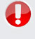

Automate any task
Almost every application requires periodic tasks, anything from triggering backups to scheduling as a feature. With runlater you can let us do the scheduling while you focus on your application.
Use any language
runlater is language agnostic. All tasks are submitted runlater over HTTP+SSL and all tasks are executed over HTTP(with SSL if specified).

Error handling
Every time a task is run we store a log with the entire HTTP response, allowing you to keep track of success and failures
Front End and REST API
Use the web front-end to create API keys, view logs and even schedule tasks. Use the REST API to submit Jobs and view Logs.